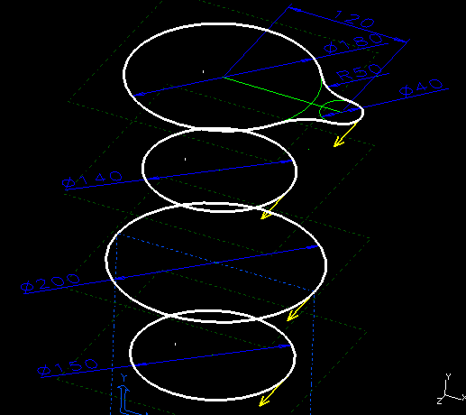

| Next Page | Previous Page | First Page |

Loft from the top section (use Stop at Intersections) down to the bottom section. Ensure the yellow arrows ALL point in the same direction.
Ensure you leave the Endcaps ON.

Ensure the preview iso-lines are smooth and there are NO twists before creating the lofted part.